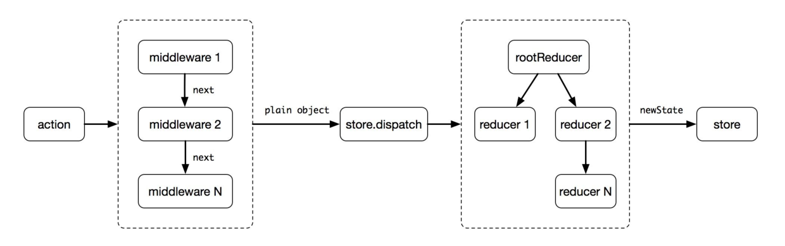
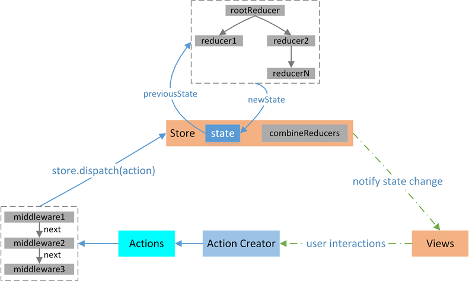

# 一、创建同步Action
Action是数据从应用传递到store/state的载体，也是开启一次完成数据流的开始
普通的action对象
const action = {
type:'ADD_TODO',
name:'poetries'
}
dispatch(action)
封装action creator
function actionCreator(data){
return {
type:'ADD_TODO',
data:data
}
}
dispatch(actionCreator('poetries'))
bindActionCreators合并
function a(name,id){
reurn {
type:'a',
name,
id
}
}
function b(name,id){
reurn {
type:'b',
name,
id
}
}
let actions = Redux.bindActionCreators({a,b},store.dispatch)
//调用
actions.a('poetries','id001')
actions.b('jing','id002')
action创建的标准
在Flux的架构中，一个Action要符合 FSA(Flux Standard Action) 规范，需要满足如下条件
- 是一个纯文本对象
- 只具备
type、payload、error和meta中的一个或者多个属性。type字段不可缺省，其它字段可缺省 - 若
Action报错，error字段不可缺省，切必须为true
payload是一个对象，用作Action携带数据的载体
标准action示例
- A basic Flux Standard Action:
{
type: 'ADD_TODO',
payload: {
text: 'Do something.'
}
}
- An FSA that represents an error, analogous to a rejected Promise
{
type: 'ADD_TODO',
payload: new Error(),
error: true
}
https://github.com/acdlite/flux-standard-action
- 可以采用如下一个简单的方式检验一个
Action是否符合FSA标准
// every有一个匹配不到返回false
let isFSA = Object.keys(action).every((item)=>{
return ['payload','type','error','meta'].indexOf(item) > -1
})
# 二、创建异步action的多种方式
最简单的方式就是使用同步的方式来异步，将原来同步时一个
action拆分成多个异步的action的，在异步开始前、异步请求中、异步正常返回（异常）操作分别使用同步的操作，从而模拟出一个异步操作了。这样的方式是比较麻烦的，现在已经有redux-saga等插件来解决这些问题了
异步action的实现方式一：setTimeout
redux-thunk中间处理解析
function thunkAction(data) {
reutrn (dispatch)=>{
setTimeout(function(){
dispatch({
type:'ADD_TODO',
data
})
},3000)
}
}
异步action的实现方式二：promise实现异步action
redux-promise`中间处理这种`action
function promiseAction(name){
return new Promise((resolve,reject) => {
setTimeout((param)=>{
resolve({
type:'ADD_TODO',
name
})
},3000)
}).then((param)=>{
dispatch(action("action2"))
return;
}).then((param)=>{
dispatch(action("action3"))
})
}
# 三、redux异步流程

- 首先发起一个action，然后通过中间件，这里为什么要用中间件呢，因为这样
dispatch的返回值才能是一个函数。 - 通过
store.dispatch，将状态的的改变传给store的小弟reducer，reducer根据action的改变，传递新的状态state。 - 最后将所有的改变告诉给它的大哥，
store。store保存着所有的数据，并将数据注入到组件的顶部，这样组件就可以获得它需要的数据了
# 四、Redux异步方案选型
redux-thunk
Redux本身只能处理同步的Action，但可以通过中间件来拦截处理其它类型的action，比如函数(Thunk)，再用回调触发普通Action，从而实现异步处理
- 发送异步的
action其实是被中间件捕获的，函数类型的action就被middleware捕获。至于怎么定义异步的action要看你用哪个中间件，根据他们的实例来定义，这样才会正确解析action
Redux本身不处理异步行为，需要依赖中间件。结合redux-actions使用，Redux有两个推荐的异步中间件
redux-thunkredux-promise
redux-thunk的源码如下
function createThunkMiddleware(extraArgument) {
return ({ dispatch, getState }) => next => action => {
if (typeof action === 'function') {
return action(dispatch, getState, extraArgument);
}
return next(action);
};
}
const thunk = createThunkMiddleware();
thunk.withExtraArgument = createThunkMiddleware;
export default thunk;
源码可知，
action creator需要返回一个函数给redux-thunk进行调用，示例如下
export let addTodoWithThunk = (val) => async (dispatch, getState)=>{
//请求之前的一些处理
let value = await Promise.resolve(val + ' thunk');
dispatch({
type:CONSTANT.ADD_TO_DO_THUNK,
payload:{
value
}
});
};
- 而它使用起来最大的问题，就是重复的模板代码太多
//action types
const GET_DATA = 'GET_DATA',
GET_DATA_SUCCESS = 'GET_DATA_SUCCESS',
GET_DATA_FAILED = 'GET_DATA_FAILED';
//action creator
const getDataAction = (id) => (dispatch, getState) => {
dispatch({
type: GET_DATA,
payload: id
})
api.getData(id) //注：本文所有示例的api.getData都返回promise对象
.then(response => {
dispatch({
type: GET_DATA_SUCCESS,
payload: response
})
})
.catch(error => {
dispatch({
type: GET_DATA_FAILED,
payload: error
})
})
}
}
//reducer
const reducer = (oldState, action) => {
switch(action.type) {
case GET_DATA :
return oldState;
case GET_DATA_SUCCESS :
return successState;
case GET_DATA_FAILED :
return errorState;
}
}
这已经是最简单的场景了，请注意：我们甚至还没写一行业务逻辑，如果每个异步处理都像这样，重复且无意义的工作会变成明显的阻碍
- 另一方面，像
GET_DATA_SUCCESS、GET_DATA_FAILED这样的字符串声明也非常无趣且易错 上例中，GET_DATA这个action并不是多数场景需要的
redux-promise
由于
redux-thunk写起来实在是太麻烦了，社区当然会有其它轮子出现。redux-promise则是其中比较知名的
它自定义了一个
middleware，当检测到有
action的
payload属性是
Promise对象时，就会
- 若
resolve，触发一个此action的拷贝，但payload为promise的value，并设status属性为"success" - 若
reject，触发一个此action的拷贝，但payload为promise的reason，并设status属性为"error"
- 若
//action types
const GET_DATA = 'GET_DATA';
//action creator
const getData = function(id) {
return {
type: GET_DATA,
payload: api.getData(id) //payload为promise对象
}
}
//reducer
function reducer(oldState, action) {
switch(action.type) {
case GET_DATA:
if (action.status === 'success') {
return successState
} else {
return errorState
}
}
}
redux-promise为了精简而做出的妥协非常明显：无法处理乐观更新
场景解析之：乐观更新
多数异步场景都是悲观更新的，即等到请求成功才渲染数据。而与之相对的乐观更新，则是不等待请求成功，在发送请求的同时立即渲染数据
- 由于乐观更新发生在用户操作时，要处理它，意味着必须有action表示用户的初始动作
- 在上面
redux-thunk的例子中，我们看到了GET_DATA,GET_DATA_SUCCESS、GET_DATA_FAILED三个action，分别表示初始动作、异步成功和异步失败，其中第一个action使得redux-thunk具备乐观更新的能力 - 而在
redux-promise中，最初触发的action被中间件拦截然后过滤掉了。原因很简单，redux认可的action对象是plain JavaScript objects，即简单对象，而在redux-promise中，初始action的payload是个Promise
redux-promise-middleware
redux-promise-middleware`相比`redux-promise`，采取了更为温和和渐进式的思路，保留了和`redux-thunk`类似的三个`action
//action types
const GET_DATA = 'GET_DATA',
GET_DATA_PENDING = 'GET_DATA_PENDING',
GET_DATA_FULFILLED = 'GET_DATA_FULFILLED',
GET_DATA_REJECTED = 'GET_DATA_REJECTED';
//action creator
const getData = function(id) {
return {
type: GET_DATA,
payload: {
promise: api.getData(id),
data: id
}
}
}
//reducer
const reducer = function(oldState, action) {
switch(action.type) {
case GET_DATA_PENDING :
return oldState; // 可通过action.payload.data获取id
case GET_DATA_FULFILLED :
return successState;
case GET_DATA_REJECTED :
return errorState;
}
}
# 五、redux异步操作代码演示
- 根据官网的async例子分析 https://github.com/lewis617/react-redux-tutorial/tree/master/redux-examples/async
action/index.js
import fetch from 'isomorphic-fetch'
export const RECEIVE_POSTS = 'RECEIVE_POSTS'
//获取新闻成功的action
function receivePosts(reddit, json) {
return {
type: RECEIVE_POSTS,
reddit: reddit,
posts: json.data.children.map(child =>child.data)
}
}
function fetchPosts(subreddit) {
return function (dispatch) {
return fetch(`http://www.subreddit.com/r/${subreddit}.json`)
.then(response => response.json())
.then(json =>
dispatch(receivePosts(subreddit, json))
)
}
}
//如果需要则开始获取文章
export function fetchPostsIfNeeded(subreddit) {
return (dispatch, getState) => {
return dispatch(fetchPosts(subreddit))
}
}
fetchPostsIfNeeded这里就是一个中间件。redux-thunk会拦截fetchPostsIfNeeded这个action，会先发起数据请求，如果成功，就将数据传给action从而到达reducer那里
reducers/index.js
import { combineReducers } from 'redux'
import {
RECEIVE_POSTS
} from '../actions'
function posts(state = {
items: []
}, action) {
switch (action.type) {
case RECEIVE_POSTS:
// Object.assign是ES6的一个语法。合并对象，将对象合并为一个，前后相同的话，后者覆盖强者。详情可以看这里
// https://developer.mozilla.org/en-US/docs/Web/JavaScript/Reference/Global_Objects/Object/assign
return Object.assign({}, state, {
items: action.posts //数据都存在了这里
})
default:
return state
}
}
// 将所有的reducer结合为一个,传给store
const rootReducer = combineReducers({
postsByReddit
})
export default rootReducer
这个跟正常的
reducer差不多。判断action的类型，从而根据action的不同类型，返回不同的数据。这里将数据存储在了items这里。这里的reducer只有一个。最后结合成rootReducer,传给store
store/configureStore.js
import { createStore, applyMiddleware } from 'redux'
import thunkMiddleware from 'redux-thunk'
import createLogger from 'redux-logger'
import rootReducer from '../reducers'
const createStoreWithMiddleware = applyMiddleware(
thunkMiddleware,
createLogger()
)(createStore)
export default function configureStore(initialState) {
const store = createStoreWithMiddleware(rootReducer, initialState)
if (module.hot) {
// Enable Webpack hot module replacement for reducers
module.hot.accept('../reducers', () => {
const nextRootReducer = require('../reducers')
store.replaceReducer(nextRootReducer)
})
}
return store
}
- 我们是如何在
dispatch机制中引入Redux Thunk middleware的呢？ 我们使用了applyMiddleware() - 通过使用指定的
middleware，action creator除了返回action对象外还可以返回函数 - 这时，这个
action creator就成为了thunk
界面上的调用：在containers/App.js
//初始化渲染后触发
componentDidMount() {
const { dispatch} = this.props
// 这里可以传两个值，一个是 reactjs 一个是 frontend
dispatch(fetchPostsIfNeeded('frontend'))
}
改变状态的时候也是需要通过
dispatch来传递的
- 数据的获取是通过
provider,将store里面的数据注入给组件。让顶级组件提供给他们的子孙组件调用。代码如下：
import 'babel-core/polyfill'
import React from 'react'
import { render } from 'react-dom'
import { Provider } from 'react-redux'
import App from './containers/App'
import configureStore from './store/configureStore'
const store = configureStore()
render(
<Provider store={store}>
<App />
</Provider>,
document.getElementById('root')
)
这样就完成了
redux的异步操作。其实最主要的区别还是action里面还有中间件的调用，其他的地方基本跟同步的redux差不多的。搞懂了中间件，就基本搞懂了redux的异步操作
